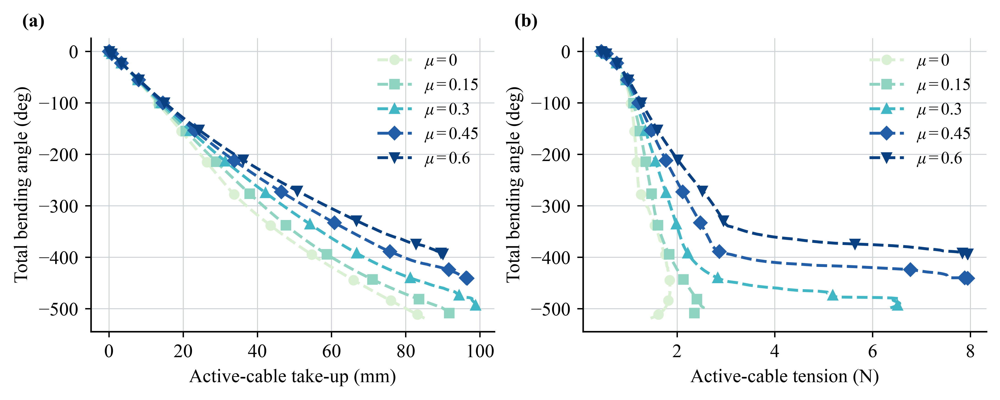

验证与复现¶
证据分层¶
解析与单元检查：单边本构、圆柱切线、虚功、Capstan 比值与配置校验。
机构数值实验：滑轮、卷扬、Atwood、滚动关节与摩擦敏感性。
展示视频：观察路线与运动，不取代误差、能量和性能统计。
实物验证：当前公开案例不包含新的多次硬件试验原始记录；不能从仿真图推导硬件精度。
当前公开数值复跑¶
以下数字来自仓库 examples/paper/latest_plugin/ 的 2026-11-04 记录，使用优化版插件。构建文档本身不会偷偷重跑或改写这些结果。记录的源码与动态库哈希见 RUN_MANIFEST。
验证问题 |
已记录结果 |
应如何解释 |
|---|---|---|
0.2 kg 负载，固定轮，mu=0 |
负载张力 1.962 N；提升 RMSE 0.161 mm |
与 \(mg=0.2\times9.81\) 和 1:1 行程相符 |
固定轮，mu=0.15 |
参考峰值张力比 1.3674；测量 1.3614 |
正则化滑动模型，约 0.45% 差异 |
自由惯性轮 |
峰值 0.605 rad/s；转矩 RMSE \(4.09\times10^{-5}\) N m |
张力差驱动被动转轴 |
理想卷轴/滑轮 |
轮缘行程 RMSE 0.000473 mm |
此例显式加了理想 equality，不是靠摩擦自然无滑移 |
动滑轮 |
收绳 20 mm，负载提升 10.185 mm |
接近两承载段的 2:1 关系 |
Atwood 落地 |
落地时刻误差 -9.38% |
明确保留的理想模型偏差，不宣称完美一致 |
Faive PIP |
虚拟铰链 49.994 deg；绳驱 52.481 deg |
角度输入与收绳输入不同，需分别解释 |
SpiRobs，mu=0.15 |
插件总弯曲 -522.970 deg；native -521.833 deg |
形状接近不代表传动受力相同 |
校准模型双向周期 |
右 -524.052 deg；左 523.770 deg；最终误差 0.406 deg |
18 关节角度之和，不是单关节转角 |
双索预紧 |
采样最小张力均大于 0.421 N |
只针对该控制轨迹与采样点 |
以上七组 Result 1 复跑与所列 Faive/摩擦条件，最大已报告路线状态为 0。这里的 contact_fraction 是刚体接触保持率，不是绳路有效率。相关数据可打包下载。


这是确定性摩擦敏感性对照，没有重复实物试验置信区间。观察到大摩擦改变形状和传力，并不等于已辨识某种材料的真实系数。
在自己的机器上复跑¶
先完成安装，在仓库根目录执行：
python -m pip install -r examples/paper/requirements.txt
python examples/paper/run.py audit --check-videos
python examples/paper/run.py result1 --skip-videos
python examples/paper/run.py result2 --skip-videos
python examples/paper/run.py cycle --duration 24 --guide-friction-mu 0.015
python examples/paper/run.py benchmark --repeats 7 --duration 6
省略 --skip-videos 才会渲染新视频，需要 OpenGL 与 FFmpeg。新输出默认进入 outputs/paper_latest/，不会覆盖公开存档。模型加载审计只是短步检查，不等于全程稳定性验收。
给新机器人做什么测试¶
检查 |
方法 |
不应跳过的细节 |
|---|---|---|
松弛不推力 |
增加余绳，检查 T 与广义力 |
sensor 的 T 非负不代表所有状态都有效 |
虚功 |
无摩擦，中心差分 \(L(q)\) 与 \(-T\partial L/\partial q\) |
保持同一路线分支；freejoint 在切空间扰动 |
摩擦比 |
已知包角，比较 \(T_h/T_l\) 与 \(e^{\mu\Theta}\) |
velocity 正则化近零速并不达到完整指数比 |
路线无穿透 |
自由段相交测试、表面距离与状态 |
不是仅看透明模型里“似乎贴面” |
步长收敛 |
依次减半 timestep 比较轨迹与张力 |
保持相同连续控制时间，不按步数对齐 |
速度/能量 |
比较输入功、负载能和耗散 |
外部控制做功、轴承阻尼也必须计入 |
性能 |
隔离测量，改变 mesh/绳数 |
区分平均、p95、初始化和稳定步进 |
测试未通过时保留失败条件和残差，不用渲染平滑遮盖数值问题。完整推导与历史统计见资料下载。